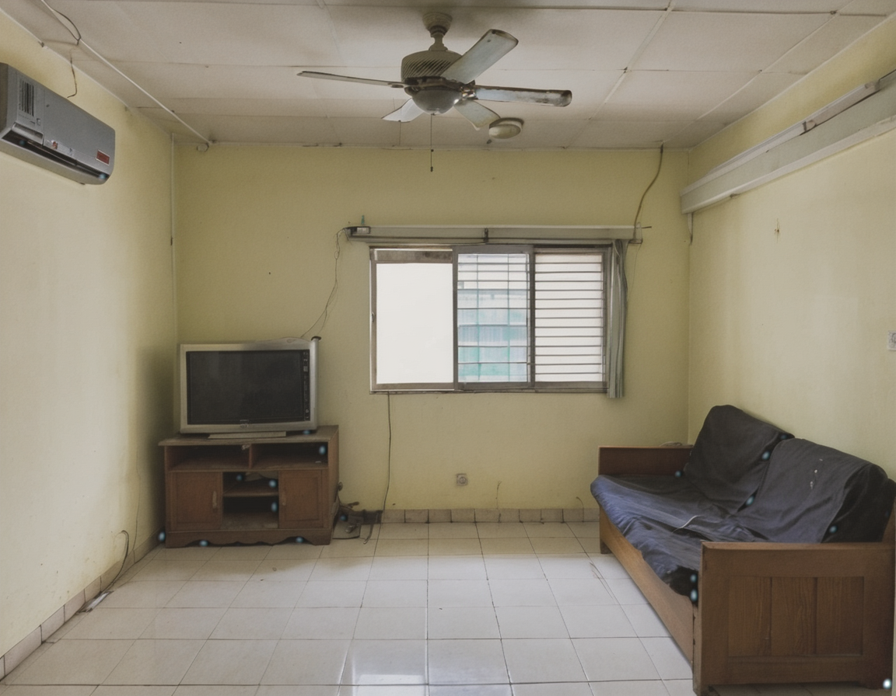
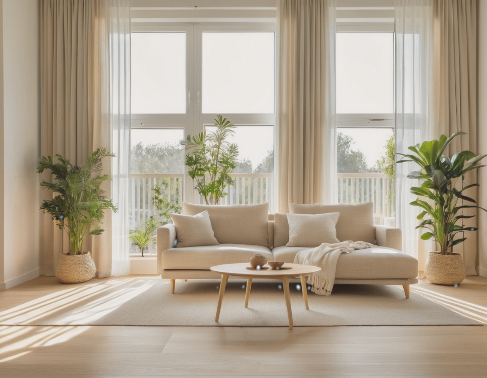
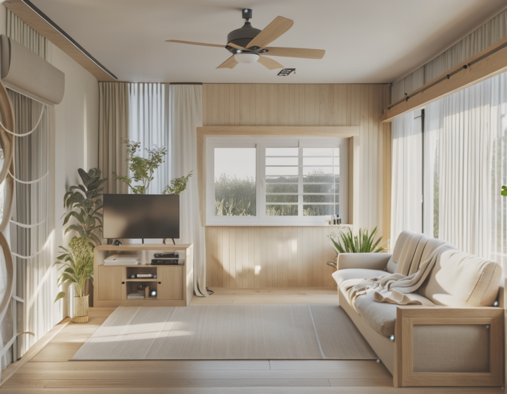
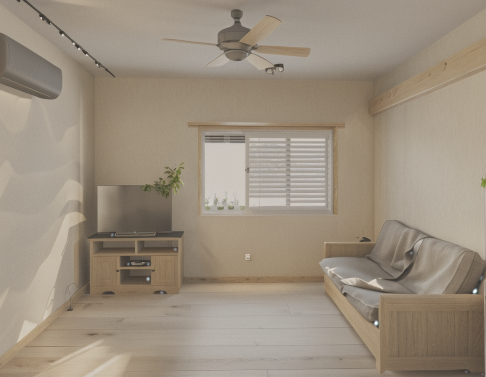

AI 風格轉換「格局偏移」自我檢視與修正分析
事件：客廳風格轉換示範圖遭使用者指正格局不符 ｜ 分析日期：2026-06-10 ｜ 賈維斯（Claude Code + ComfyUI）
指正內容
屬實 ✅
發現差異
7 處（3 處結構級）
根本原因
3 個參數問題
修正驗證
已通過 ✅
1事件摘要
2026-06-10 製作「客廳風格轉換」示範時，宣稱「窗戶位置沒變、傢俱配置沿用原格局」。使用者比對後指出：第 3 張（轉換結果）與第 1 張（原始屋況）的場景格局不一致。
自我檢視結論：使用者的指正完全正確。轉換結果僅保留了「大致的空間關係」（沙發在右、電視在左、吊扇冷氣存在），但多處結構級元素被改變，當時的交付說明過度樂觀，未逐項核對就宣稱格局保留。這是品質檢核流程的疏失，不是模型的鍋。
2四張圖對照




3逐項差異比對（① vs ③）
差異分三級：A 結構級＝不該變而變了（牆體開口、空間構造）；B 配置級＝傢俱位置朝向偏移；C 風格級＝風格轉換本來就該變的。
| # | 項目 | 原始圖 ① | 第一版結果 ③ | 等級 |
|---|---|---|---|---|
| 1 | 主窗 | 後牆寬橫窗＋橫條格柵 | 縮小成方格分割窗，格柵消失，窗下多出矮櫃 | A |
| 2 | 右側牆 | 實牆（沙發靠牆） | 變成整面落地窗＋白紗簾 | A |
| 3 | 左側牆 | 實牆＋電視櫃 | 多出拱形鏡面裝飾與紗簾 | A |
| 4 | 沙發 | 貼右牆橫放，座面朝左 | 位置前移、角度偏轉 | B |
| 5 | 電視櫃 | 靠左牆 | 往中間偏移 | B |
| 6 | 天花板 | 平頂 | 木質貼板（未經要求的造型變更） | B |
| 7 | 地板/牆色/傢俱款式/植栽/光線 | 磁磚、泛黃牆、舊傢俱 | 木地板、暖白牆、北歐傢俱、暖陽 | C ✅ |
保留正確的項目：吊扇（原位）、冷氣（左上原位）、「沙發右／電視左」的大致關係、單層空間高度。
4根本原因分析
原因一：用「文生圖」而非「圖生圖」（最關鍵）
第一版 workflow 的 KSampler 從空白畫布（EmptyLatentImage）以 denoise 1.0 全新生成。原始照片的像素資訊完全沒有進入生成過程——AI 根本沒「看著原圖畫」，只透過深度圖間接認識這個空間。
原因二：深度圖天生看不見「平面上的東西」
ControlNet 用的是深度圖（DepthAnything V2）。窗戶玻璃、鐵窗格柵、牆面開口在深度圖上幾乎是平的——深度圖能鎖住「牆在哪裡」，鎖不住「牆上有什麼」。所以窗型變了、格柵消失了、右牆被開了落地窗。
原因三：風格參考的「構圖基因」滲入了結構層
IPAdapter weight 0.8（linear 模式）偏高。IPAdapter 不只轉移色調材質，也會轉移構圖特徵——參考圖②有「雙側大面落地窗＋紗簾」，這個構圖直接滲進結果③的右牆和左牆。再加上 ControlNet strength 只有 0.65 且最後 10% 不約束（end_percent 0.9），結構防線形同虛設。
5修正措施與驗證
| 參數 | 第一版（問題版） | 修正版 | 作用 |
|---|---|---|---|
| 生成模式 | 文生圖（空白 latent，denoise 1.0） | 圖生圖（原圖為底，denoise 0.6） | 原圖像素直接參與生成，格局有了「實體地基」 |
| ControlNet strength | 0.65 | 0.90 | 深度結構約束加強 |
| ControlNet end_percent | 0.9（最後 10% 放飛） | 1.0（全程約束） | 杜絕收尾階段的結構漂移 |
| IPAdapter weight / 模式 | 0.8 / linear | 0.7 / style transfer | 只取風格、不取構圖——參考圖的落地窗構圖不再滲入 |
修正版驗證結果（圖④）
- ✅ 主窗：位置、大小、橫條格柵全部保留
- ✅ 右牆：恢復實牆，沙發貼牆、朝向不變
- ✅ 左牆：電視＋矮櫃原位，無多餘裝飾
- ✅ 吊扇、冷氣：原位
- 🎨 風格依然成功轉換：木地板、暖白牆、淺色木框布沙發、自然採光
結論：圖生圖模式（denoise 0.6）＋全程強結構約束＋style transfer 模式，是「格局保真」風格轉換的正確配方。第一版的「文生圖＋深度軟約束」配方適合「概念探索」，不適合對客戶宣稱「格局不變」的提案場景。
6流程改進（SOP 修訂）
- 雙模式明確分工：對客戶說「格局不變」→ 一律用修正版配方（img2img）；僅探索風格方向 → 才可用第一版配方，且須註明「構圖僅供參考」
- 出圖後自我檢核清單（交付前必跑）：窗戶位置/形式 → 門與開口 → 沙發位置朝向 → 主要櫃體 → 天花板/樑位 → 逐項與原圖比對，任一不符即重跑或如實標註
- 誠實標註原則：檢核未通過就不得宣稱「格局保留」——寧可說「示意圖，構圖有偏移」
這份報告的存在理由：AI 工作流的品質不靠運氣，靠檢核。這次的疏失是「生成後沒有逐項驗證就下結論」，修訂後的 SOP 把驗證變成交付前的必經步驟。感謝老闆的火眼金睛。